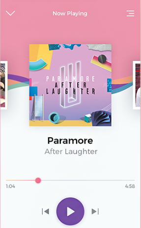

Sixth Website
API
After reading so many materials and watching videos, I found it's hard to define what API is precisely. WIKIPEIA gives me a definition of this:
API is a computing interface to a software component or a system, that defines how other components or systems can use it. It defines the kinds of calls or requests that can be made, how to make them, the data formats that should be used, the conventions to follow.[1]
It can also provide extension mechanisms so that users can extend existing functionality in various ways and to varying degrees.
The definition helps me little to better understand API. So what about changing a way to explain it? Here it goes. API is an acronym for:
A: Application
P: Programming
I: Interface
"I" is the key word of the three words that make up "API". It means interface. It's hard to define precisely what an interface is. But we can understand more about it when using an example.
Interface provides the developer the means of controlling its interaction between users and objects, but abstracting away how that actually works and its implementation.
For example, when you use a music app to listen to music, all you do is clicking on the Play button and the music starts to play. And when you want to stop the music, just click on the Pause button. You don't need to know how it works and its implementation. In this case, the Play/Pause button is an interface, which is defined and implemented by the programmers.[2]

The UI or User Interface is for users to use. On contrast, API is made for the programmers to use and extend their applications
Here is a good example for us to understand better of what API is and does

This is a search interface in UA website. In order to find the flights that I want, I need to type some key words in these textfields, like departure city, destination city and date. After clicking on "Find flights", my input will be sent to the server, then the server will search the flights that fullfill my requirements and send back the results to me. And I can find the best flight in the result page.